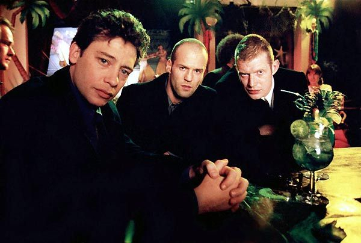
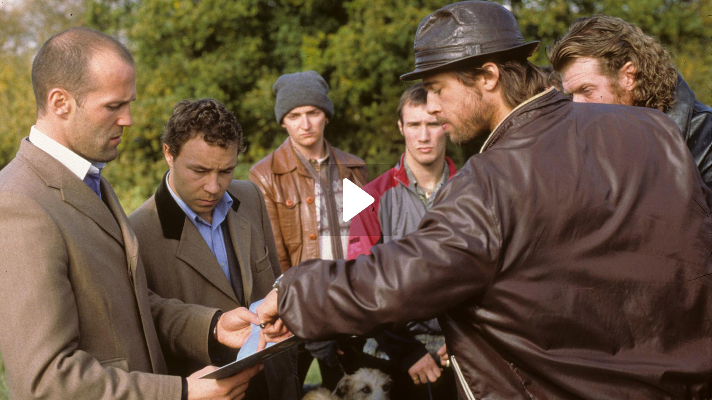

Abaut Jason Statham
Jason Statham is an English actor and former competitive diver known for his roles in action-packed films. He was born on July 26, 1967, in Shirebrook, Derbyshire, England. Statham's career in the entertainment industry began as a model and later as a background actor in various music videos. However, he gained significant recognition and popularity for his work in action films.
Some of his movies are:
Lock, Stock and Two Smoking Barrels

Snatch

Favorite Video
If you are interested, you can find him on wikipedia and learn more about him. I'm sure you'll like him and become a fan too!
This audio is not related to the text above, only as an example of how to add audio to html